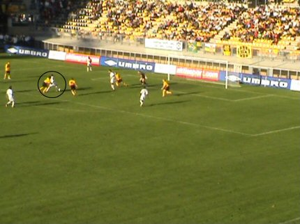
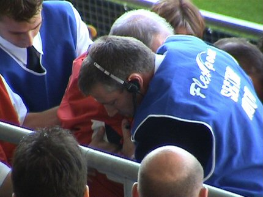

|
Roda JC - Willem II (0-2) 18 september 2005
|
50 supporters uit Tilburg op deze zonnige zondag in het zuiden.
Hun zondag wordt nog zonniger als Caluwé uit een hoekschop de bal naar
de kop van de Hongaar Kerekes verzendt die prachtig inkopt met een
snoekduik: 0-1, (21').
De bijzonder zwak fluitende Nijhuis heeft zojuist de gele kaart getrokken
voor Oper die op correcte wijze de bal ontfutselde van zijn tegenstander.

Na 25 min. mocht de teleurstellende Sonko het veld ruimen voor Cissé. Het
krediet van Edrissa lijkt op, maar hij begon met een lichte dijbeenblessure.
Hier wordt een Romeinse traditie in stand gehouden: Geef het volk brood en
spelen. Hoewel....het brood was er niet en het spel ontbrak eveneens....
Het publiek werd gek van "Hoytzer" Nijhuis. De stadionspeaker deed
amechtige pogingen de spreekkoren te sussen.

Na een afgeblokt schot komt de bal voor de voeten van Feher die strak
0-2 scoort, (56').

Een supporter op zuid is onpasselijk geworden van het abominabele spel
van Roda en heeft eerste hulp nodig.
Roda krijgt af en toe een kans, in de eerste helft zelfs een bal op de paal
door Sergio maar verder slappe schoten in de handen van de overigens
uitmuntend keepende Moens, gevaarloze hoekschoppen (al jaren zo) en
schoten die torenhoog overgaan (Bodnar, Van Dijk).
Wanneer de spelers beschroomd komen bedanken is west nagenoeg
uitgestorven.
De eveneens verlaten zuidtribune herbergt nog slechts een handjevol
supporters die zich dood- en doodschamen voor de wanprestatie van Roda.
De cooling down was een genante afsluiting voor de spelers. Huub Stevens
staat weer op het veld (hij had van de arbiter een veldverwijzing gekregen).
Interessant om te vermelden is dat vanaf de 68e minuut, Roda met ELF
buitenlanders speelde. Een primeur in de vaderlandse competitie. Volgende
week kan een nieuw record gevestigd worden; als Roda verliest van Ajax is
dat de langste reeks nederlagen op rij!

Ex-Rodagirl
Sonja
wil een "knackige" Roda-boy zien en doet een beroep op
Kevin. De hevig blozende jongeling voelt zich overrompeld.
De jongens en meisjes van Helden blijven vrolijk.
Verzoekplaatje van ex-Rodagirl
Chantal
Naja, en dan wil iedereen op de foto met Chantal.....
De laagstaande zomeravondzon zorgde voor bijzondere effecten. Hier zien
we een jonge supporter uit Herkenbosch (Midden-Limburg) met de bezoekers
van de Kick-Off; Laszlo Bodnar en Ken Leemans.
Leo feliciteert Sosianne met haar uitnodiging om Rodameëdsje te worden.
Weer een SBC-lid erbij zo te zien!
Roda zakt na deze nederlaag naar een diep- en dieptrieste 17e plaats. Een
bloemlezing uit de vandaag gescandeerde opmerkingen:
"Verkoop er nog maar een, verkoop er nog maar een..."
"Wij gaan naar Sittard toe...."
"Hendriks bedankt, Hendriks bedankt...."
"Arouna Kone, jalalalalala, Arouna Kone jalalalaaa"
- Koempels Pleasure Dome
|